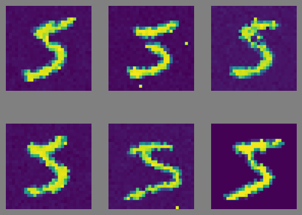

/home/jo3/p/features2image_diffusion/.venv/lib/python3.11/site-packages/IPython/core/magics/osm.py:417: UserWarning: using dhist requires you to install the `pickleshare` library.
self.shell.db['dhist'] = compress_dhist(dhist)[-100:]
/home/jo3/p/features2image_diffusion/.venv/lib/python3.11/site-packages/jo3util/warning.py:18: ToDoWarning: 'Make sure file names are numeric before the .npy.'
warnings.warn(msg, ToDoWarning)
def all_features_and_labels(dataset: DataLoader) -> Tuple[ Float[torch.Tensor, "datapoints features"], Float[torch.Tensor, "datapoints"]]:""" Gather all features and labels into 2 big numpy arrays.""" all_features = [] all_labels = []for features, _, labels in dataset: all_features.append(torch.Tensor(features)) all_labels.append(torch.Tensor(labels))return torch.concatenate(all_features), torch.concatenate(all_labels)TRAIN_FEATURES, TRAIN_LABELS = all_features_and_labels(TRAIN_SET)print(TRAIN_FEATURES.shape, TRAIN_LABELS.shape)
An NVIDIA GPU may be present on this machine, but a CUDA-enabled jaxlib is not installed. Falling back to cpu.
0.5737580060958862 0.0127316415309906
More than half the features are active for any picture. That’s not good, we’ll need to run this again sometime. Let’s sort them by variance so we can guide our edits.
def generate_and_show( ddpm, features, num_generations, original_img=None, device=DEVICE):# Generate images.with torch.no_grad(): generations, _ = DDPM.sample( features, num_generations, original_img.shape, device ) generations = generations.cpu().numpy()# Determine the shape of the table of images. num_images = num_generationsif original_img isnotNone: num_images +=1 rows =int(np.sqrt(num_images)) cols = num_images // rowsif rows * cols < num_images: cols +=1 fig, axs = plt.subplots(rows, cols, facecolor="gray")# Place the images in the table.for i, generation inenumerate(generations): r = i // cols c = i % cols axs[r, c].imshow(to_img(generation)) axs[r, c].set_axis_off()if original_img isnotNone: axs[-1, -1].imshow(to_img(original_img)) axs[-1, -1].set_axis_off() plt.show()return generations_ = generate_and_show(DDPM, EXAMPLE_FEATURES, 5, EXAMPLE_IMAGE)
sampling timestep 100

Those are some crappy generations.
Let’s see how they change as we change the features. The 128th features had the highest standard deviation, so let’s what it is here, and then change it.
print(EXAMPLE_FEATURES[0, 128]) # That's close to the average.def edit_features(features, value, *index): new_features = features.clone().detach()slice= new_featuresfor i in index[:-1]:slice=slice[i]slice[index[-1]] = valuereturn new_featuresEDITED_FEATURES = edit_features(EXAMPLE_FEATURES, 0.0, 0, 128)_ = generate_and_show(DDPM, EDITED_FEATURES, 5, EXAMPLE_IMAGE)